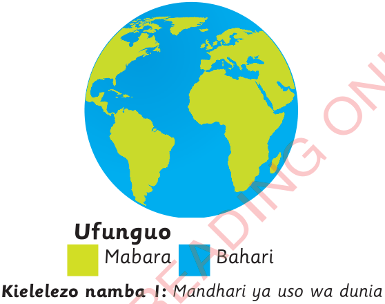

mazingira. Jiografia imejikita katika kumwezesha binadamu kujenga stadi za msingi zitakazomwezesha kuyafahamu mazingira yake na kuhusiana nayo kwa njia endelevu. Kielelezo namba 1 kinaonesha mandhari ya uso wa dunia.

Binadamu anavyoishi juu ya uso wa dunia anazungukwa na vitu mbalimbali. Vitu hivi vyote pamoja na binadamu mwenyewe ni sehemu ya mazingira. Hivyo, mazingira ni vitu vyote vinavyomzunguka binadamu. Vitu vinavyomzunguka binadamu vinaweza kuwa ni vya asili ambavyo huunda mazingira ya asili au vilivyotengenezwa na binadamu. Vitu vya asili ni vile ambavyo havijatengenezwa na binadamu kama vile milima, mabonde, misitu, wanyama, mito, bahari, ardhi, na hewa. Vitu vilivyotengenezwa na binadamu ni kama vile nyumba, barabara, bustani, meza, magari na vitu vingine vyote ambavyo siyo vya asili. Maelezo kuhusu vitu vinavyounda mazingira yanaweza kufupishwa kama inavyoonekana katika Kielelezo namba 2.